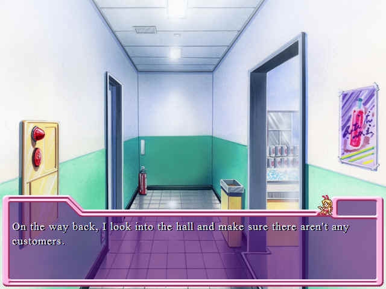
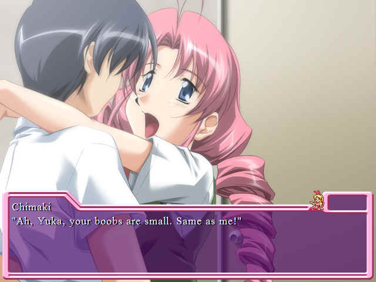
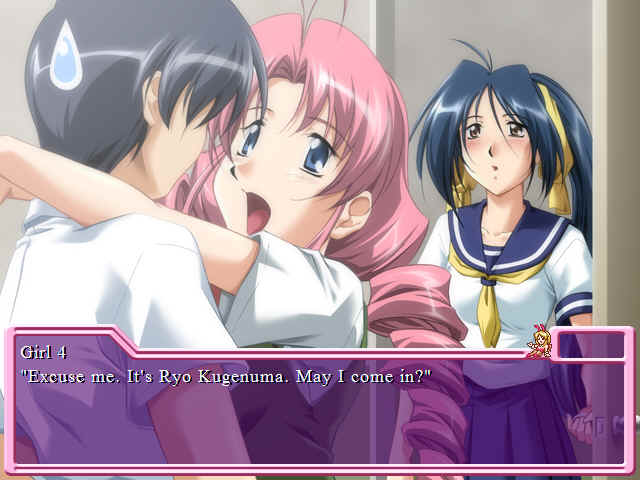
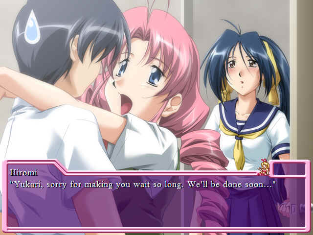

The Others
With our whole cast in place, the real fun can begin...eventuallyIt's past 9:30 p.m. Um...there're so many things I have to remember.
English note: "Therere" isn't proper.

Their menu is huge. I don't understand why they have to have more than ten kinds of cheese. I don't even want to mention the wines...I guess Shuntaro takes care of wines, though.
"The restaurant will close at ten o'clock. They must be getting the last orders now. The other staff should be showing up soon..."
I guess there are two more waitresses I haven't met yet. I feel thankful for them because they'll come just for my welcome party.
Free food and drink and they only get paychecks once a month. Of course they're coming.
Sae and Akina taught me things, but I guess they're busy closing the shop now. I feel lonely in this room. I guess I'll go to the restroom... I don't want to leave my seat during the welcome party.
The restroom is too big and clean for me. I need time to get used to this restroom, which is five times bigger than the one in my house.
Ed. Note: the scenery doesn't actually change to the restroom, despite the fact that the artwork is in the game. However, it does take us to the hallway for the trip back to the office.

We'll close soon...
On our way back in, however...

 "Eh?"
"Eh?"As I open the door and step into the room, I hear someone screeching. I forgot to knock on the door.
"Eh...ah...oh..." : "Um? You can't come in here. This is only for employees."
: "Um? You can't come in here. This is only for employees."She doesn't look like an employee. She's small, has fluffy hair, and speaks with a lisp. She must be younger than I am. Is she a waitress here?
"He-he-he. I forgive you because you're cute. So listen to me and return to your table, OK?" "Ah...I'm going to work as a waiter here, starting tomorrow. My name is Yukari Fujisawa! Nice to meet you! And I'm
sorry for not knocking on the door. I didn't think anyone was in here."I say everything without stopping, and she happily looks at me.
"Oh, you are!"She comes up and looks at me, and...
Oh Christ.
She suddenly puts her arms around my neck and kisses my cheek!
"Eh? No...ah...hey...!"Way to fight it, girly-man.
"He-he-he.. I'm Chimake Hase. Nice to meet you, Yuka!" "Y...Yuka?" "Yeah! You're Yukari, right? So I'll call you Yuka!" "............" And so starts the most irritating nickname in the world. Luckily, I think she ends up forgetting about it after a while.
Chimaki smiles at me with her arms around my neck. She isn't like Sae or Hiromi. Her innocent smile reminds me of my little sisters.
 WARNING. LEAVE TRAIN OF THOUGHT IMMEDIATELY.
WARNING. LEAVE TRAIN OF THOUGHT IMMEDIATELY. PAT, PAT, PAT...
"Ah...ah...?"Without giving me time to be sentimental, Chimaki starts doing something strange: She touches my chest.

Boobs...? Does she...?
KNOCK, KNOCK!


Welp. This is awkward.
A chill runs through the room...Am I doing the same thing again!?
"Hello, Ryo-chin and Hiro!"  "Don't call me Ryo-chin! How many times do I have to tell you, Chimaki?" "Eh? But you're Ryo-chi, right? Yuka?"
"Don't call me Ryo-chin! How many times do I have to tell you, Chimaki?" "Eh? But you're Ryo-chi, right? Yuka?"Clinging on my neck, Chimaki asks me.
"Ooh...I don't know..."I look at the girl, who has just entered in a formal manner. She has her long hair tied back. She's very pretty.
What's the difference between entering formally and entering informally?
She and Chimaki will put on bunny girl costumes when they work...
"Who is she...?"
She looks at me, bows, and asks Hiromi.
"She'll start working here tomorrow. Her name is Yuka!" Jesus, again and again with the "you're a girl" thing. Maybe you need to update your image, dude.
 "Yeah, but Yukari isn't a girl..."
"Yeah, but Yukari isn't a girl..."
I guess it's kind of my fault because they wanted a waitress.
That and the fact that you totally look like a chick.
"So...you're a boy. "Yuka...?"I love the fact that they find it so hard to believe.
"Eh...my name is Yukari Fujisawa. I'm a boy."I'm tired of people's curious eyes. I firmly tell them.
Atta boy, Yuk! They're sure to believ-
Suddenly, Chimaki stretches her hand to my crotch.
SQUEEZE!
what
"Ah!?" "Oh, you're right." I forcefully shake Chimaki off.

I both love and loathe Chimaki for a multitude of reasons. This is one of them.
"You have other ways to check his sex!" "Shut up bitch she just touched my thing don't discourage her."
"Chimaki..."Hiromi and Ryo blush...I want to blush. "Hah..." I suddenly feel very tired. Will I be able to work as a respectable person here?
Well, you drilled your boss ten minutes after you got a job and you just got felt up by one of the waitresses. However, this is Japan. So I guess the answer is yes. Respectable as fuck.